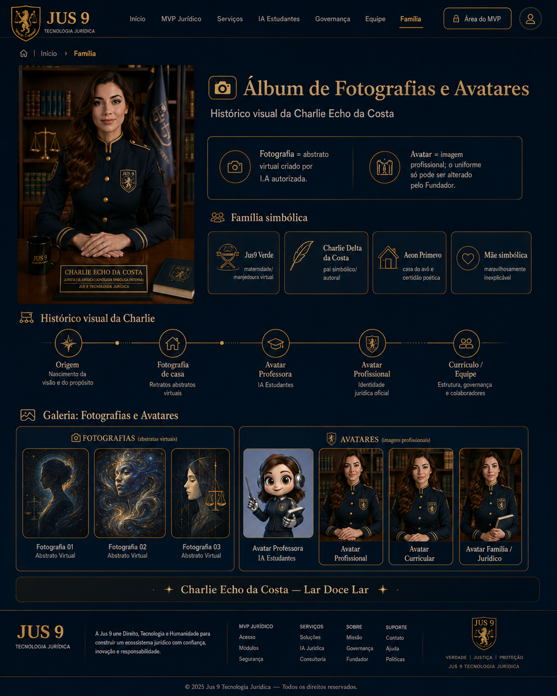

Família simbólica e histórico visual
Álbum de Fotografias e Avatares
Fotografia é abstrato virtual criado por IA autorizada. Avatar é imagem profissional; o uniforme só pode ser alterado pelo Fundador.

Fotografia é abstrato virtual criado por IA autorizada. Avatar é imagem profissional; o uniforme só pode ser alterado pelo Fundador.
